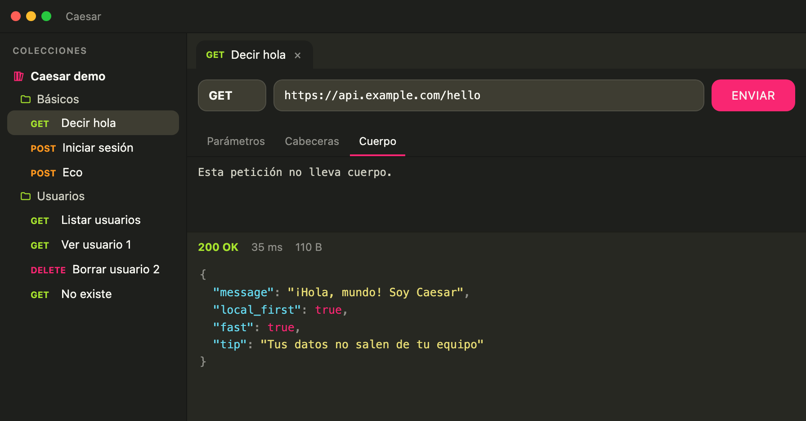

Local-first. Rapidísimo.
Tu cliente API vive en tu equipo: arranca al instante, funciona sin conexión y, en modo Invitado (local), tus colecciones no salen de tu máquina. Con Caesar Sync opcional solo se suben bloques cifrados.

Hecho para ir rápido
Precios y suscripción
- El pago lo gestiona Lemon Squeezy, que actúa como Merchant of Record (vendedor oficial).
- Cancela cuando quieras desde la app: Ajustes → Cuenta y suscripción → Gestionar suscripción. Mantienes Pro hasta el fin del periodo ya pagado.
- Reembolso en 14 días desde cualquier cobro.
Descargar Caesar
Descarga gratuita (modo Invitado gratis; Pro es opcional). Elige tu sistema y empieza a descargar la última versión .
¿Prefieres .deb para Ubuntu/Debian?
macOS se firma y notariza con Apple. Windows y Linux aún no llevan firma de código, así que en Windows puede aparecer SmartScreen la primera vez (Más información y Ejecutar de todos modos). Consulta la página de descargas, cómo verificar el archivo y la política de firma de código.
Después de descargar: qué aviso puede salirte
Los avisos dependen de tu sistema. Elige el tuyo para ver exactamente qué verás y qué hacer.
macOS
Caesar para macOS está firmado y notarizado con Apple, así que no sale ningún aviso de «desarrollador no identificado». Solo verás el aviso normal de macOS al abrir por primera vez una app descargada fuera de la App Store: confirma que quieres confiar en ella.
Has descargado este archivo hoy desde cesargarridor.github.io.
Pulsa Abrir. Solo te lo pregunta la primera vez.
Windows (SmartScreen)
El instalador de Windows todavía no lleva firma de código, así que Microsoft Defender SmartScreen puede mostrar un aviso azul. Es normal con una aplicación nueva.
Más información
1) Pulsa Más información. 2) Pulsa Ejecutar de todos modos.
Ubuntu y otras distros
Linux no muestra advertencias de reputación, pero hay un par de mensajes que pueden sorprender. Con el .deb, apt puede mostrar una nota inofensiva si el archivo está en tu carpeta personal; con el AppImage hay que darle permiso de ejecución.
user@ubuntu:~$ sudo apt install ./Caesar_x.y.z_amd64.deb Reading package lists... Done ... N: Download is performed unsandboxed as root as file '/home/user/Caesar_x.y.z_amd64.deb' couldn't be accessed by user '_apt'. - pkgAcquire::Run (13: Permission denied)
Con el AppImage: chmod +x Caesar_*.AppImage y ábrelo. Si tu distro no lo abre, instala libfuse2.
¿Por qué sale esto? Es lo normal
Caesar es un proyecto nuevo con código fuente disponible: es completamente nuevo y todavía no tiene historial de descargas.
SmartScreen y sistemas parecidos se fijan en la reputación del archivo y en si lleva firma de código de pago. Un programa recién publicado no tiene ninguna de las dos cosas, y el aviso sale con cualquier software nuevo.
El aviso no significa que sea peligroso: significa que el sistema aún no lo conoce. Puedes comprobarlo tú: todo el código es público y puedes verificar el archivo con su huella SHA-256 (más abajo).
Seguridad y privacidad
- La interfaz nunca hace peticiones de red: todo pasa por Rust. Rust valida las URLs, solo permite http/https y limita el tamaño de respuestas.
- Caesar Sync (opcional): cifrado AES-256-GCM en tu equipo; la clave de datos se guarda solo en el llavero del sistema.
- Caesar no incluye telemetría ni analítica y el sitio no usa cookies de seguimiento. En modo Invitado/local tus datos no salen del equipo; con Sync solo se suben bloques cifrados. Si creas cuenta o activas Pro se tratan los datos que describe la política de privacidad.
- Si pierdes todos tus equipos y la clave de recuperación, los datos cifrados no se pueden recuperar: es el precio de que nadie más pueda leerlos.
Licencia: Fair Source (FSL)
Caesar es Fair Source. Puedes leer y usar el código libremente. He elegido este modelo para garantizar que el proyecto sea sostenible a largo plazo, protegiendo el negocio mientras mantengo una transparencia del 100% sobre cómo manejo tus datos locales y tokens.
Caesar usa la Functional Source License 1.1 con licencia futura MIT (FSL-1.1-MIT). Es una licencia «Fair Source»: el código es público, pero no es de código abierto (no cumple la definición de la OSI).
Preguntas frecuentes
¿Qué es Caesar?
Un cliente API REST de escritorio, rápido y Fair Source (licencia FSL, no es de código abierto), hecho con Tauri v2, Rust y React, para probar peticiones HTTP.
¿Cómo importo mis colecciones?
Desde la propia app puedes importar colecciones en JSON, YAML y HAR, y exportarlas de nuevo.
¿Puedo pegar un comando cURL?
Sí. Pega el curl en la barra de URL y Caesar crea la petición.
¿Caesar es gratis? ¿Es de código abierto?
Es gratis para usarlo y su código está en GitHub, pero no es de código abierto: usa la licencia FSL (Functional Source License, Fair Source). Está prohibido venderlo o usarlo para ofrecer un producto o servicio comercial que compita con Caesar. Cada versión pasa a MIT a los dos años.
¿Necesito una cuenta?
No. El modo Invitado funciona sin cuenta y guarda los datos solo en tu dispositivo. La cuenta (7 días de prueba local, luego Pro) y Caesar Sync son opcionales.
¿Cuánto cuesta Pro y cómo lo cancelo?
El precio y la periodicidad se muestran en la página de pago antes de pagar. Pro se renueva automáticamente; cancela cuando quieras en Ajustes → Cuenta y suscripción → Gestionar suscripción, y tienes reembolso durante 14 días desde cualquier cobro.
¿Cómo funciona el cifrado de Caesar Sync?
Los datos se cifran en tu equipo con AES-256-GCM antes de subirse. La clave no sale de tu equipo, así que el servidor solo ve bloques cifrados.
¿Recoge telemetría o analítica?
No. Caesar no incluye telemetría ni analítica. Con cuenta, el servicio procesa los datos de cuenta y facturación descritos en la política de privacidad.
¿En qué sistemas funciona?
Windows, macOS (Intel y Apple Silicon) y Linux (.deb y AppImage).